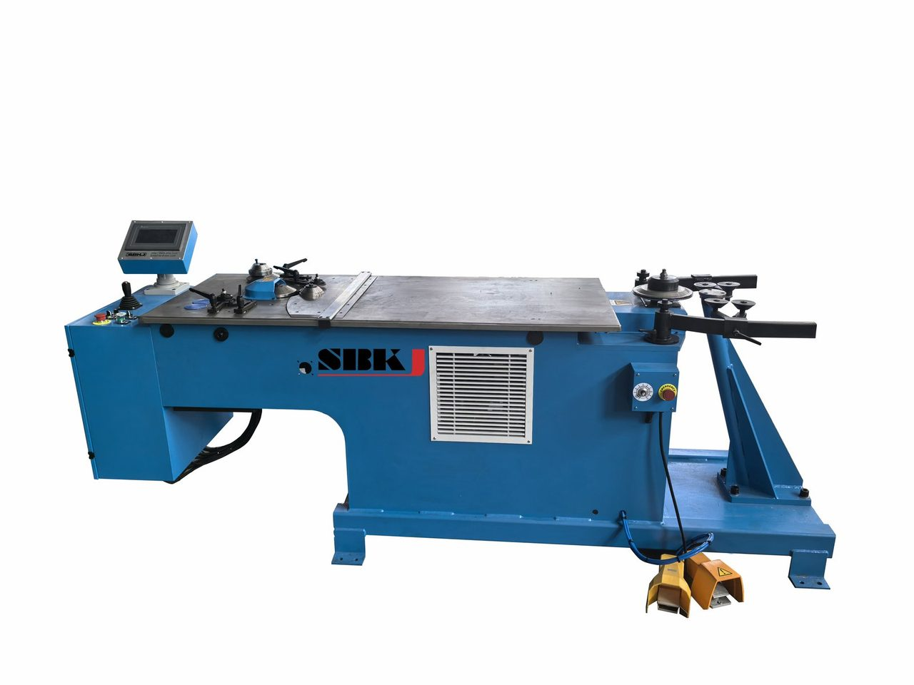

Metal Corrugated Spiral Pipe Machine
Heavy-duty corrugated spiral duct forming

Overview
The SBKJ Metal Corrugated Spiral Pipe Machine produces corrugated spiral pipes for heavy-duty ventilation and industrial applications. Available in three models (SBHCSP-I, SBHCSP-II, SBHCSP-III) covering a wide range of diameters and thicknesses. Equipped with plasma cutting system for precise cuts. Ideal for large-diameter industrial ductwork.
Video
Demo video available on request
Contact for factory footageSpecifications, applications and operation
Specification breakdown. The Metal Corrugated Spiral Pipe Machine is offered in models SBHCSP-I / SBHCSP-II / SBHCSP-III, handles material thicknesses of 1.2–2.0 / 2.0–3.0 / 2.2–3.4 mm, handles material thicknesses of 3.4 mm, wave profile 38×6.5 / 68×13 / 75×25 mm, covering diameters from Φ300–Φ1000 / Φ500–Φ1700 / Φ1000–Φ3000, requires 30 / 55 / 75 kW, cutting system Plasma cutter.
Typical applications. Spiral tubeformers produce continuous round duct from coil stock and are used wherever round duct is preferred over rectangular — kitchen exhaust, industrial dust extraction, high-velocity supply systems, mine ventilation and clean-room return paths. Typical buyers include round-duct specialists, large mechanical contractors needing on-site spiral capacity, and OEM manufacturers of dust collection and material handling systems. Spiral duct is also increasingly specified for architecturally exposed HVAC because of its clean visual lines.
How it works. A spiral tubeformer takes coil stock through a series of forming heads that progressively roll the strip into a helical tube while continuously locking the spiral seam. Cut-off is performed either by flying shear (cuts the duct while it is still moving — no sparks, no swarf, no secondary deburring) or by saw blade (mechanically simpler, easier to maintain). Output diameter is changed by swapping the forming head set, typically a 30–60 minute changeover for trained operators.
Quality, certification and after-sales. Like every machine in the SBKJ catalogue, this unit is built to ISO 9001:2015 quality management standards and CE marked for European conformity. The office in Box Hill North, VIC has been operating since 1995 and SBKJ holds 60+ invention and utility patents in HVAC ductwork machinery design. Each machine ships with a 12-month warranty on mechanical and electrical components, lifetime spare-parts availability, and 3–7 days of on-site installation supervision and operator training by an SBKJ engineer. Remote support is available via WhatsApp and email, with engineer response within 12 hours and technical troubleshooting within 72 hours.
Where this fits in your workshop
On a typical spiral duct workshop layout, this machine sits in the helical-forming line between the decoiler and the cut-off saw. Coil stock feeds from a 5-tonne uncoiler with motorised edge guide, runs through the spiral former, and the finished tube is parted off in single-length increments by an inline plasma or shear cut-off. Downstream of the line, finished spiral duct goes either to a flanging cell, a jointer for fitting manufacture, or directly to packing for export. SBKJ supplies all four upstream and downstream stations as matched modules.
Pre-purchase checklist
Use this list when you write the enquiry or when you compare two suppliers. Each line is something an SBKJ engineer will want clarified before quoting.
- Diameter range — confirm both minimum and maximum match your project mix
- Strip width versus material thickness — thin gauge needs a smaller strip than heavy gauge
- Cut-off type — plasma for stainless and aluminium, shear for galvanised
- Output rate at the gauge you actually run most often, not the headline rate
- Strip width changeover time — under 15 minutes is the SBKJ benchmark
- Coil weight capacity matched to your local steel coil supplier
Operator and maintenance notes. The Metal Corrugated Spiral Pipe Machine is designed to be run by a single trained operator under normal conditions. Daily checks include lubrication of the forming rolls, inspection of the drive belts and chain tension, and a clean-down of the tool surfaces. Weekly checks add electrical cabinet inspection and a torque check on the main frame fasteners. SBKJ ships every machine with an English operator manual, a maintenance schedule and a recommended two-year spare parts kit. Operator training is included in the 7-day commissioning visit, and a refresher session can be booked at any time within the warranty period.
Why buy from SBKJ
A 30-Year Manufacturer Trusted in 100+ Countries
- ISO 9001:2015Quality system certified
- CE MarkingEuropean conformity
- 5,000+ MachinesInstalled worldwide
- 12-Hour ReplyEngineer-led quotation
Founded in 1995 in Box Hill North, VIC, SBKJ Group is a specialist manufacturer of HVAC ductwork machinery. Our products are ISO 9001:2015 quality certified, CE marked, and protected by 60+ invention and utility patents. From single forming machines to complete turn-key duct factories — we engineer the full chain from coil to finished duct, with on-site installation, operator training and lifetime spare parts.
Specifications reviewed by SBKJ Engineering & QA · Last verified
Frequently asked questions
About this machine
Who manufactures the Metal Corrugated Spiral Pipe Machine?
The Metal Corrugated Spiral Pipe Machine is manufactured by SBKJ Group, a specialist manufacturer founded in 1995, ISO 9001:2015 and CE certified, with 5,000+ HVAC duct machines installed in 100+ countries.
Is the Metal Corrugated Spiral Pipe Machine CE certified?
Yes. SBKJ HVAC ductwork machinery is CE marked for European conformity and SBKJ Group operates under an ISO 9001:2015 quality management system.
How can I request a quotation for the Metal Corrugated Spiral Pipe Machine?
Email sales@sbkjduct.com or message +61 435 074 994 on WhatsApp with your duct size range, daily output target, material thickness and country. SBKJ replies within 12 hours with a machine configuration, workshop layout drawing and budget.
Does SBKJ provide installation and training?
Yes. SBKJ Group provides on-site installation and commissioning, operator training, and lifetime spare-parts support for every machine and turn-key HVAC duct factory delivered.